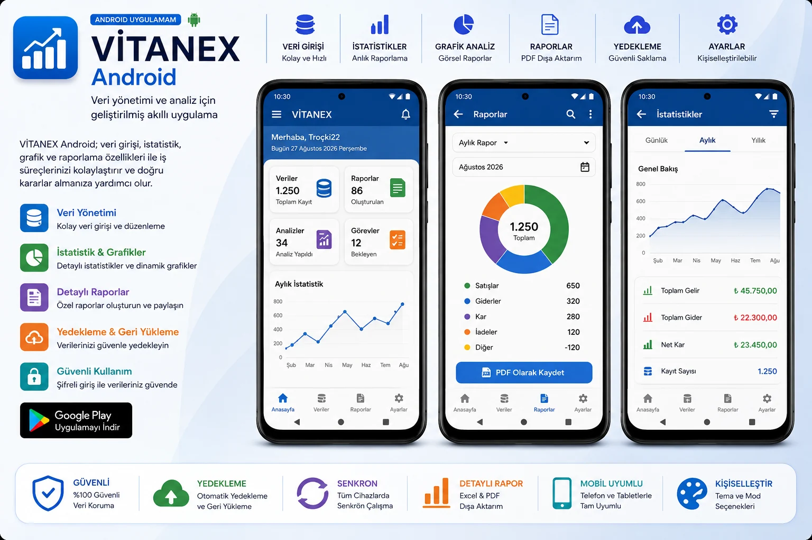
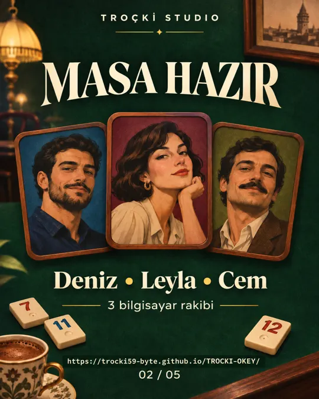
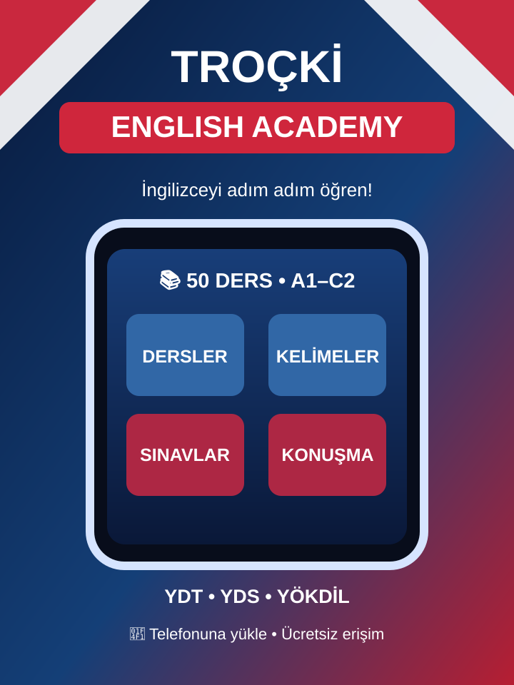
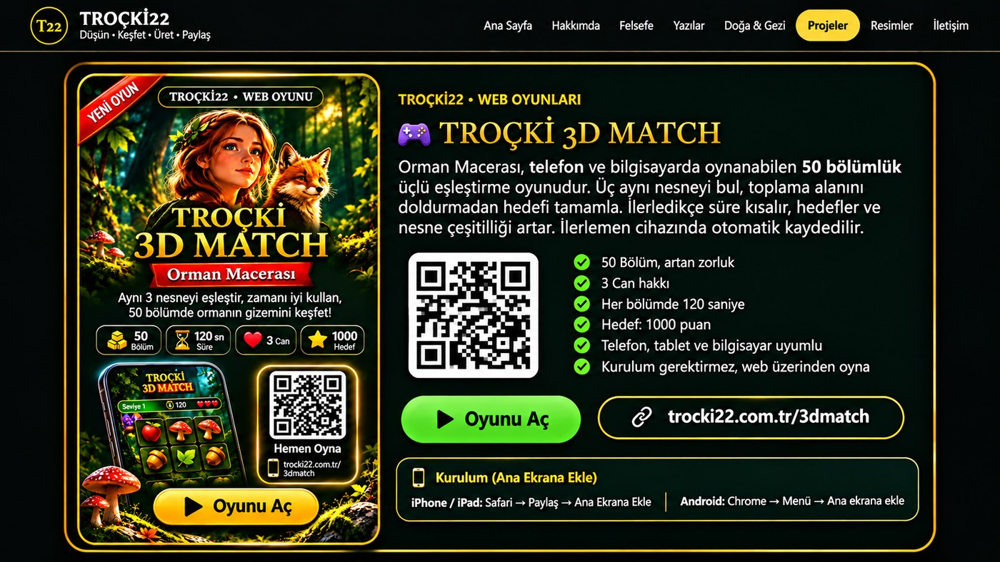
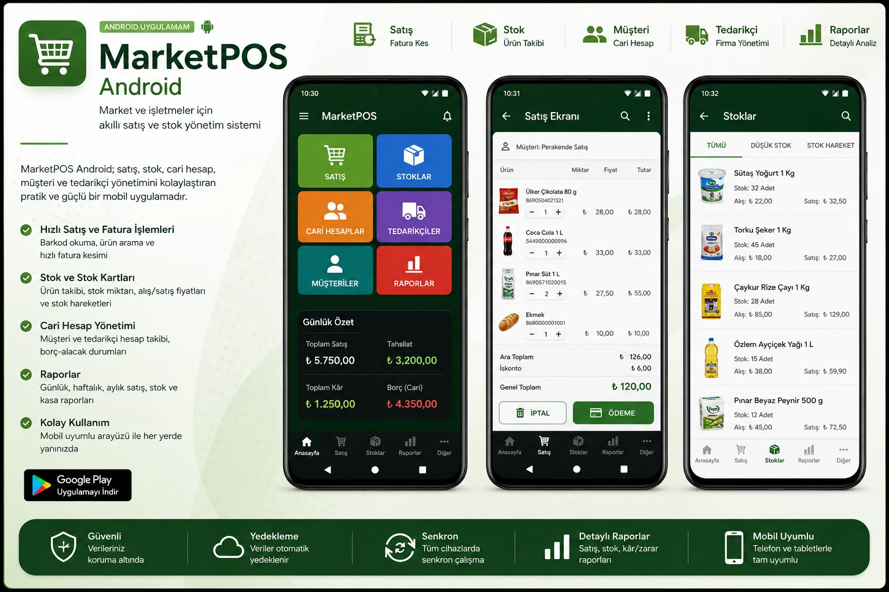
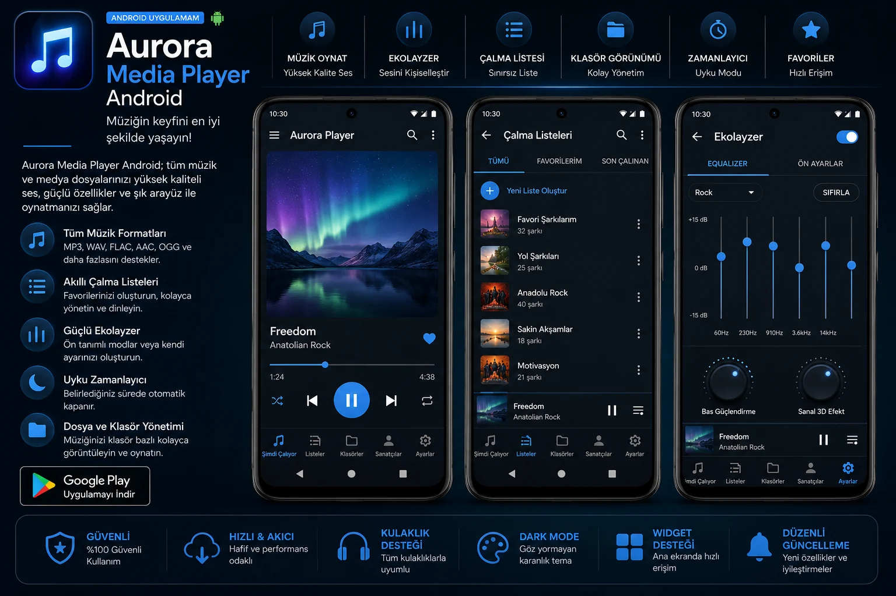

TROÇKİ22 • PROJELER
Projeler
Tarım, sağlık, üretim ve günlük yaşam için geliştirdiğim uygulamalar ve çalışmalar.
Projeler
TROÇKİ22’de geliştirdiğim uygulamalar, oyunlar, yayınlar ve yaratıcı projeler.




MarketPOS PRO
Stok • Satış • Fatura • Finans
UygulamalarProje arşivi



TROÇKİ STUDIO
Müzik • Videolar • Yapımlar
MedyaProje arşivi

Tanrılar Kadınken
Kitap • Mitoloji • Araştırma
YayınlarProje arşivi

Kuzeyin Son Ateşi
Tarihî roman • Vikingler
YayınlarProje arşivi

Uyku İçin Tarih
Sesli tarih hikâyeleri
MedyaProje arşivi

Yeni Bir İnsanlık Tarihi
Tarih • Toplum • Ekonomi
YayınlarProje arşivi

Özbilincin Doğuşu
Felsefe • Birey • Özgürlük
YayınlarProje arşivi

Dede Korkut – Sözün Hafızası
Halk anlatıları • Edebiyat
YayınlarProje arşivi
Eşleşen proje bulunamadı.